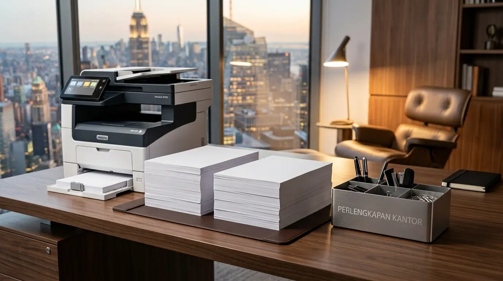

Mengapa perbandingan derajat keputihan kertas HVS PaperOne vs Sinar Dunia sangat penting untuk dokumen kantor?
Perbandingan derajat keputihan kertas hvs paperone vs sinar dunia penting karena warna latar kertas memengaruhi kontras teks, ketajaman cetakan warna, dan tingkat profesionalisme dokumen perusahaan.
Dalam lingkungan bisnis korporat, dokumen resmi seperti proposal tender, laporan keuangan, dan kontrak kerja membutuhkan media cetak berkualitas. Derajat keputihan (whiteness) diukur menggunakan standar internasional CIE (Commission Internationale de l'Eclairage). Semakin tinggi angka CIE, semakin terang dan putih visual kertas tersebut saat terpapar cahaya.
Berdasarkan Uji Laboratorium Spektrofotometri Media Cetak periode 2024–2025, PaperOne 80 gsm mencatatkan tingkat keputihan sebesar 159–169 CIE (kategori bluish-white atau putih kebiruan yang sangat terang). Di sisi lain, Sinar Dunia (SiDu) 80 gsm mencatatkan tingkat keputihan 148–155 CIE (kategori natural bright white). Hal ini membuat PaperOne tampil sedikit lebih putih mencolok, sedangkan Sinar Dunia memberikan nuansa putih bersih yang tidak terlalu menyilaukan mata.
Bagaimana performa cetak dan ketahanan jam kertas dari kedua brand tersebut?
Performa cetak PaperOne didukung oleh teknologi ProDigi yang mencegah penyerapan tinta berlebih, sementara Sinar Dunia menawarkan formulasi serat kayu padat yang sangat tahan terhadap kemacetan mesin (paper jam).
Teknologi Permukaan dan Penyerapan Tinta
PaperOne melengkapi setiap lembaran kertasnya dengan ProDigi HD Print Technology. Teknologi ini membuat tinta inkjet atau toner laser menetap di permukaan kertas secara optimal tanpa meresap berlebihan ke dalam serat. Hasilnya, konsumsi tinta cair dapat dihemat hingga 18% sekaligus menghasilkan warna hitam yang lebih pekat dan grafik berwarna yang lebih tajam.
Ketebalan dan Struktur Serat Kertas
Sinar Dunia (SiDu) diproduksi oleh APP Group menggunakan serat kayu olahan berkualitas tinggi yang menghasilkan kerapatan lembaran sangat konsisten. Ketebalan kertas 80 gsm milik Sinar Dunia memberikan ketahanan mekanis yang sangat kuat saat melewati roda penarik mesin cetak (printer roller).
Data survei operasional perkantoran tahun 2025 menunjukkan bahwa penggunaan kertas Sinar Dunia 80 gsm pada mesin fotokopi kecepatan tinggi (di atas 60 lembar per menit) mencatatkan tingkat paper jam sangat rendah, yaitu hanya 1 kali kejadian per 10.000 lembar pencetakan.

Hasil uji kontras pencetakan teks dokumen dan grafis warna pada kertas HVS 80 gsm premium.
Mana yang lebih direkomendasikan untuk kebutuhan operasional kantor Anda?
Pilihan terbaik tergantung pada peruntukan dokumen: PaperOne sangat direkomendasikan untuk presentasi dan dokumen eksternal, sedangkan Sinar Dunia sangat ideal untuk pencetakan dokumen internal volume tinggi.
Bagi divisi pemasaran, direksi, dan hubungan eksternal yang rutin mencetak proposal penawaran, portofolio profil perusahaan, atau dokumen hukum resmi, nada putih kebiruan PaperOne memberikan impresi kemewahan dan ketegasan warna yang tak tertandingi. Sebaliknya, bagi divisi administrasi, kearsipan, dan operasional harian yang mencetak ribuan lembar draf kerja atau fotokopi, Sinar Dunia memberikan rasio efisiensi biaya serta kenyamanan membaca yang luar biasa.
Matriks Perbandingan Kertas HVS 80 Gsm PaperOne vs Sinar Dunia
| Parameter Evaluasi | PaperOne Digital 80 gsm | Sinar Dunia (SiDu) 80 gsm |
|---|---|---|
| Tingkat Keputihan (CIE) | 159 – 169 CIE (Putih Kebiruan / Ultra White) | 148 – 155 CIE (Putih Alami / Natural Bright) |
| Teknologi Khusus | ProDigi HD Print Technology | Micro-Pored Fiber Structure |
| Keunggulan Utama | Kontras Cetak Warna Sangat Tinggi | Ketahanan Bebas Jam Sangat Tinggi |
| Kontras Teks Hitam | Sangat Pekat & Tajam | Pekat & Sangat Jelas |
| Rekomendasi Penggunaan | Proposal, Kontrak, & Presentasi Direksi | Laporan Harian, Arsip, & Fotokopi Massal |
- Gunakan Palet atau Rak: Jangan letakkan dus kertas langsung di atas lantai plester semen untuk menghindari rembesan uap air tanah.
- Tutup Rapat Sisa Rim: Lipat kembali kemasan kertas pelindung jika rim belum habis terpakai agar kertas tidak mekar.
- Aklimatisasi Ruangan: Biarkan kertas baru berada di suhu ruang printer selama minimal 2 jam sebelum proses pencetakan massal dimulai.
Apa saja kesalahan umum dalam penyimpanan kertas HVS di kantor?
Kesalahan umum mencakup menyimpan dus kertas di atas lantai semen tanpa alas palet, membiarkan kemasan rim terbuka di ruangan lembap, serta menumpuk rim terlalu tinggi.
Kertas bersifat higroskopis, yang berarti lembaran kertas mudah menyerap kelembapan udara di sekitarnya. Kertas yang lembap akan melengkung dan memicu kemacetan parah saat dimasukkan ke dalam mesin pencetak. Pastikan dus kertas disimpan di dalam lemari arsip besi atau rak penyimpanan khusus. Menyediakan area penyimpanan yang tertata rapi menggunakan pendukung perlengkapan kantor berkualitas menjaga kondisi kertas tetap prima siap pakai.
Mengapa memilih distributor resmi perlengkapan kantor sangat menguntungkan?
Membeli pasokan kertas melalui distributor resmi menjamin keaslian gramatur produk, tanggal produksi kertas yang masih baru, serta ketersediaan stok skala besar dengan harga grosir.
Kertas HVS tiruan atau stok lama yang disimpan di gudang lembap sering kali mengalami penurunan kualitas warna (yellowing) dan berdebu. Debu kertas yang berlebihan dapat mengotori kepala cetak (printhead) dan merusak komponen internal mesin cetak kantor Anda. Berkolaborasi dengan mitra penyedia perlengkapan kantor terpercaya memastikan operasional administrasi perusahaan Anda selalu lancar tanpa hambatan material cetak.
FAQ tentang Kertas HVS PaperOne vs Sinar Dunia
Kesimpulan Praktis
Memilih antara kertas HVS 80 gsm PaperOne atau Sinar Dunia bergantung pada kebutuhan spesifik dokumen perusahaan Anda. PaperOne memberikan hasil visual ultra-putih yang memukau untuk dokumen krusial eksternal, sedangkan Sinar Dunia menawarkan keandalan cetak tanpa macet yang sangat ekonomis untuk arsip harian. Pastikan seluruh kebutuhan pasokan media cetak dan alat tulis kantor Anda dipenuhi secara optimal dengan memesan ragam pilihan perlengkapan kantor tepercaya sekarang juga. Dapatkan penawaran harga grosir terbaik untuk pengadaan kantor Anda hari ini.

Penulis: Analis Spesifikasi Media Cetak Kantor
Divisi Pengujian Media Cetak & Solusi Pengadaan ATK di Perlengkapan Kantor. Artikel ini telah ditinjau dan divalidasi oleh Konsultan Pengadaan Perlengkapan Korporat berdasarkan data Uji Spektrofotometri ISO 2470 dan survei fasilitas kerja 2025.